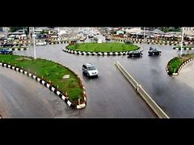
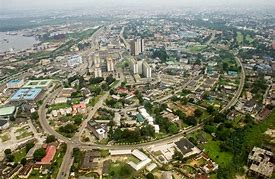
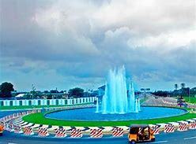
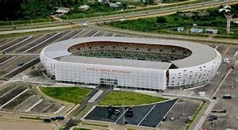

Uyo is the state capital of Akwa Ibom, in South South Nigeria. The city became the capital of the state on September 23, 1987 following the creation of Akwa Ibom State from erstwhile Cross River State. The University of Uyo Main campus is located at Nwaniba, While the Town campus and Annex campus are located along Ikpa road. The population of Uyo, according to the 2006 Nigerian Census which comprises Uyo and Itu, is 427,873. while the urban area, including Uruan, is 554,906. with Ibibio language as it tribal language
   